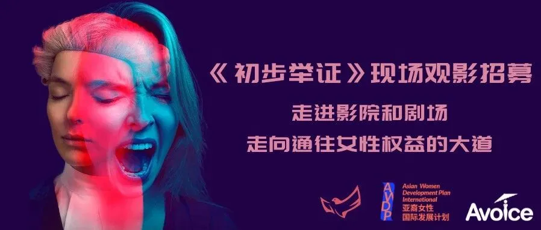
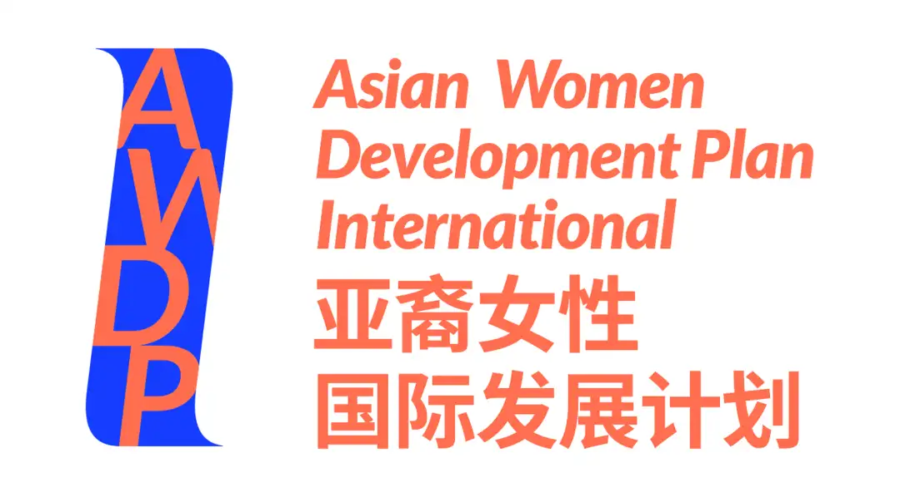

“法律是一个有机的东西。它是由我们定义的。它是由我们根据我们的经验，根据我们所有人的经验来构建的，这样就不再有借口了。这必须改变，因为事实是，三分之一的女性遭到性侵犯，她们的声音，她们需要被听到，她们需要被相信，为了正义得到伸张。”
“在某个地方，某个时刻，无论如何，有些事必须改变。”—《初步举证》，2022.
泰莎是伦敦一家律所的出庭律师，出身利物浦工人阶级的她，靠自己的能力在男性为主导的法律行业站稳了脚跟。她是一名出色强悍的出庭律师，在法庭上矫勇善战的她深深相信英国的司法系统带来的正义。直到…
这是一个平凡的工作天晚上。泰莎刚刚打赢了一场官司，决定和自己公司的（秘密）暧昧对象庆祝。酒过三巡，泰莎突然感觉喝多了，体力不支，拒绝继续约会，而暧昧对象并不这么认为，强制与她发生了性关系。被性侵后的泰莎感到了身体上的痛苦以及自己的尊严被践踏，好强的她决定起诉这位男同事。她想要再次打一场胜仗，但当在法庭中想要寻求公平正义的原告变成了她自己时，她才发现法律面前并非人人平等。曾经深信的巨塔崩塌在泰莎面前崩塌。当法律无法保护她自己时，泰莎还能相信什么？
以上故事来自于是曾斩获奥利弗奖、托尼奖等多项国际戏剧大奖的伦敦西区舞台剧《初步举证》，由苏茜·米勒 Suzie Miller编剧，朱迪·科默Jodie Comer（杀死伊芙、失控玩家主演）主演。该剧由2022年于伦敦西区开演，受到热烈反响后，由英国国际剧院现场NT LIVE 录制并在英国院线上映，成为英国本土斩获最高票房的NT LIVE舞台剧。通过90分钟独幕剧+独角戏形式，《初步举证》把舞台聚光灯聚焦“泰莎”本人，通过朱迪·科默震撼人心的表演，让观众从一名遭受侵犯的出庭女律师的视角，倾听那些曾经在法庭在公共空间中被淹没的女性受害者的声音，一步步的发现了司法系统在性侵案件中的层层漏洞，以及受害者面临的二次伤害与结构性压迫。
当性同意成为法庭上的“罗生门”
《初步举证》最尖锐的控诉，莫过于它对“性同意”的聚焦。剧中，女律师泰莎在经历性侵后，试图通过法律途径寻求正义。然而，她很快发现，司法系统对“性同意”的理解是如此狭隘和僵化。“你说不了吗？”“你为什么穿裙子？”“你为什么喝那么多酒？”“你为什么没有第一时间报警？”泰莎发现自己陷入了自证“完美受害者”的怪圈，若需要证明自己没有给予对方“性同意”，是一件非常困难的事情。司法系统对“性同意”的定义似乎过于依赖口头上的同意，然而忽视了现实中有多种因素如权力关系、社会角色、酒精、压力、恐惧等，导致受害人并没有机会说出“不”。
同时，施害者可以通过“她穿了什么”“她跟我一起喝了酒““我们之前约过会开过房”等原因直接证明他获得了对方的性同意。“你为什么穿裙子？”“你为什么喝那么多酒？”仿佛若受害者稍微打扮了点，或是和被告私下关系和睦了点，就可以受害人“邀请“被告发生关系的信号，也能合理化被告“错误”理解受害人发出的“信号”的证据……而法律行业中的性别歧视与权力不对等，更让女性在寻求正义的道路上步履维艰。在法庭上，这些看似“合理”的质问，不仅让受害者遭受心灵上的二次伤害，更加被用来抨击她们作为一名合格女性的品格，让她们在自证清白的泥潭中挣扎。
《初步举证》不仅仅是一部剧。她通过第一女性视角，将聚光灯照亮了在法庭中曾被埋没的受害者的视角； 同是刑辩律师以及受害人的泰莎那震耳欲聋的怒吼，让观众重新审视“性同意”这一法律定义，思考权威司法系统中的性别偏见，为未来创造一个更安全、公平的社会环境。
气开始转变，万物随阳气上升而萌芽生长。
3月5日，让我们一共赴正义之约
3月5日，让我们走进影院，走进剧场，共同见证这场关于“性同意”的深刻讨论。本次放映旨在呼吁更多人关注女性权益，推动社会进步。我们邀请了来自媒体及法律界的优秀女性嘉宾与大家一同观看《初步举证》的放映，并邀请大家在放映之后与嘉宾们讨论对舞台剧多角度解读，以及对性侵案件、司法系统以及女性权益等议题。现场亦为观众准备了独家《初步举证》周边文创礼品（光栅卡张及剧照纪念票根各1张），另外还有互动抽奖环节，幸运观众可获得惊喜书籍赠品。 我们致力于营造安全、舒适的观影环境，欢迎所有关心女性权益的朋友参与，期待和大家碰撞思想火花！、
活动信息
时间：
3月5日19:00-21:35（导赏时间开始21:20）
地点：
SFC上影百联影城（大上海店）
上海市黄浦区西藏中路500号第一百货B馆8楼（1/2/8号线人民广场站19号出口，KFC 左边进入电梯直达8楼）
观影+映后活动+光栅卡一张+纪念票根：
60元
奖品：
明信片、相关书籍和文创
嘉宾介绍
许建明
文化学者，作家/译者
在文化、艺术、时尚等领域的多年深耕积累，已出版十余本文化类译作。同时也是一位妻子与母亲。对日本女性困境持续关注，长期从事中日性别研究与女性发展文化交流活动.
李玉玲
AWDPI亚裔女性国际发展计划理事
汉盛律师事务所创始及管理合伙人
汉盛国际业务委员会主任
李玉玲女士为上海汉盛律师事务所创始及管理合伙人，国际业务委员会主任及知识产权中心副主任。上海市司法局涉外律师库成员。担任华东理工大学法学院客座教授、上海立信会计金融学院法学院客座教授。
主办方介绍
馨巢书屋是上海首家女性书店，以“女人写的书，写女人的书，和女人有关的书”为主线，辅以经典童书阅读，为女性读者打造一个阅读分享、艺术交流、亲子共读、电影文创、花道茶艺、非遗手工等充满文化艺术气息的精神乐园，引领更多女性成为美育之书的代言人、美好生活的践行者。
自2020年开业至今，累计5万余名线下知识女性相聚于此，同时，与女性作家、高校学者、出版社、党政先进女性、妇联、工会、读书社群、公益组织、线上博主建立了良好的合作关系，被外媒、央媒、党媒、地方媒体、自媒体等多方报道与宣传，成为国内外多所知名高校师生研究调查样本，是全国首屈一指的女性文化地标。
AWDPI
亚裔女性国际发展计划


AWDPI亚裔女性国际发展计划（Asian Women Development Plan International）是一家国际公益组织，致力于消除针对海外亚裔女性的歧视和性别暴力，并促进她们的赋能与发展。其由2020年成立的 Avoice（海外华人女性保护项目，Against Violence to Overseas Chinese Women Program）发展而来。AWDPI在欧洲、北美和亚太的多个国家和地区开展工作，并在英国、比利时和美国设立国家办公室团队并在当地进行慈善组织注册。AWDPI与各界建立了广泛的合作网络，包括联合国系统组织、各国政府相关部门、国际组织、跨国公司以及学术机构。AWDPI倡导对海外亚裔女性的生存困境的关注，并为她们提供持续的保护和支持。AWDPI希望令海外亚裔女性在社会、经济、文化、教育等方面获得更多发展机会，帮助她们从弱势群体成长为推动社会进步的重要力量。
内容编写 | 尚思宇
排版｜池一诺